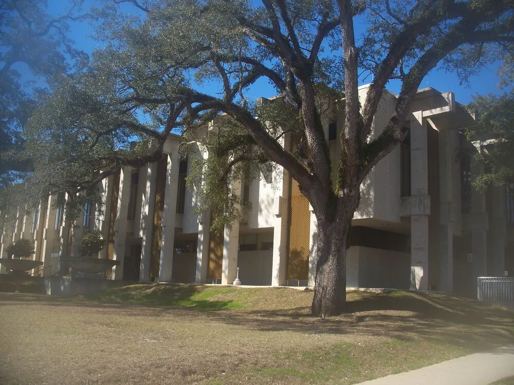

Listening first
Conversations about local barriers to wellness shape a vision centered on practical access, trust, and community connection.
Nouveau Hope began with a simple conviction: community health grows stronger when information, resources, and relationships are close to home.
Created in Marianna, Nouveau Hope Wellness Group reflects the resilience, generosity, and neighbor-to-neighbor spirit of Jackson County.
The organization was formed to connect everyday wellness needs with practical community action. Its work recognizes that health is shaped not only in clinics, but also in kitchens, parks, classrooms, and conversations between people who trust one another.
As a Florida nonprofit corporation, Nouveau Hope is building a foundation for programs that are locally informed, easy to understand, and open to collaboration.

Photography: Ebyabe (CC BY-SA 3.0), via Wikimedia Commons.
This timeline reflects the organization’s foundation and intended path forward. New public milestones can be added as programs grow.
Conversations about local barriers to wellness shape a vision centered on practical access, trust, and community connection.
Nouveau Hope Wellness Group Inc. is organized as a Florida nonprofit corporation to serve Marianna and surrounding communities.
Health education, food access, movement, and community connection become the framework for future programs.
The organization welcomes volunteers, local leaders, service providers, and residents who want to help shape useful community wellness efforts.
The next chapter centers on sustainable programming, deeper partnerships, and outcomes that reflect what Jackson County residents value.
Your experience, ideas, and local knowledge can help Nouveau Hope grow responsibly.